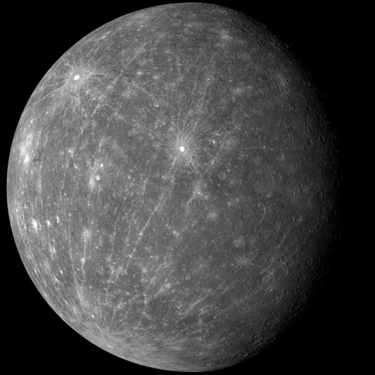

<!-- EXAMPLE TEMPLATE -->
<!-- 示例模板：下面是被注释掉的静态 HTML 卡片结构，供学生对照参考用 -->
<!-- 作用：这是老师给的静态 HTML 参考模板，展示一张行星卡片"长什么样" -->
<!-- 解释：整个文件被 HTML 注释包住不会真正显示，它的作用是让学生对照：
        把这段静态 HTML 改写成 app.js 里的 Planet 组件（数据部分换成 {planet.xxx}）；
        参考：app.js 中 Planet 组件的结构与下方模板一一对应 -->
    <!--
    <div class="container">
      <div class="card">
        <div>
          
        </div>
        <h2>Mercury</h2>
        <p>Mercury is the closest planet to the Sun. Due to its proximity, it's not easily seen except during twilight...</p>
        <h3>Planet Profile</h3>
        <ul>
          <li><strong>Diameter:</strong> 3,031.67 mi</li>
          <li><strong>Moons:</strong> none</li>
        </ul>
      </div>
      <div class="card">...</div>
    </div>
    -->
